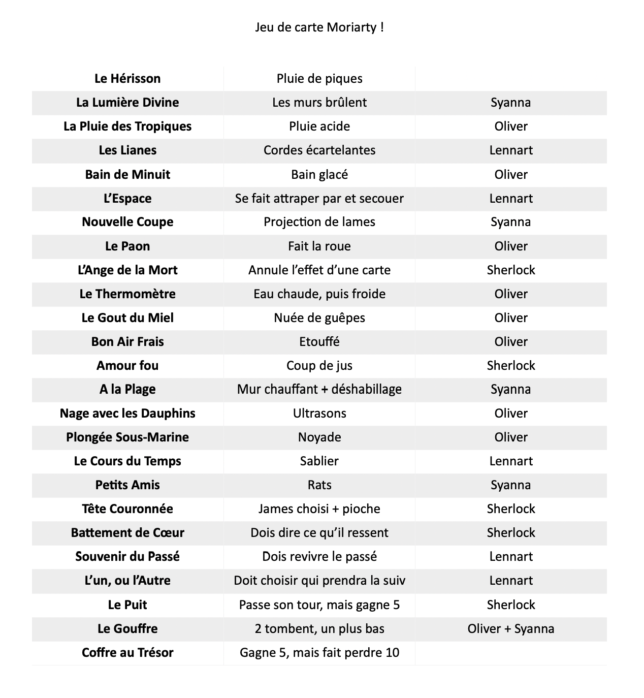

Alors que Lennart est encore traumatisé par ce qu'il a vécu et que Syanna a du mal à se remettre de la "mort" de Time, Moriarty décide de de nouveau s'amuser.
Oliver avait prévu de porter un coup décisif à Moriarty pour récupérer Léa, mais malheureusement ça ne s'est pas fait.
Au final, Moriarty a kidnappé : Sherlock, Yuki (qui est de retour), Elinor, Lennart, Syanna et Oliver. Son but : S'amuser en jouant à un jeu de cartes sordide. Il s'agissait d'un jeu de torture, des plus diversifié.
Désormais, tout ces bons gens sont à l'hôpital. Lennart, Syanna et Oliver en ont bavé. Ils s'en remettent. Elinor reste au chevet de son ami Syanna. Elle aussi a été touché par ce qu'il s'est passé.
Mycroft a été prévenu par William. Sherlock lui a fait le topo de la situation.
